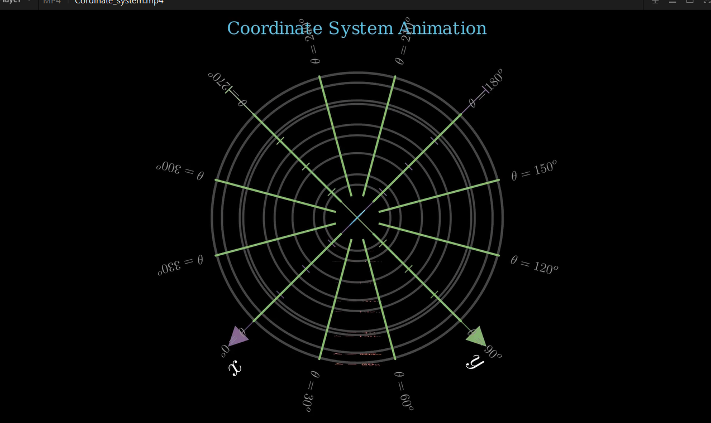
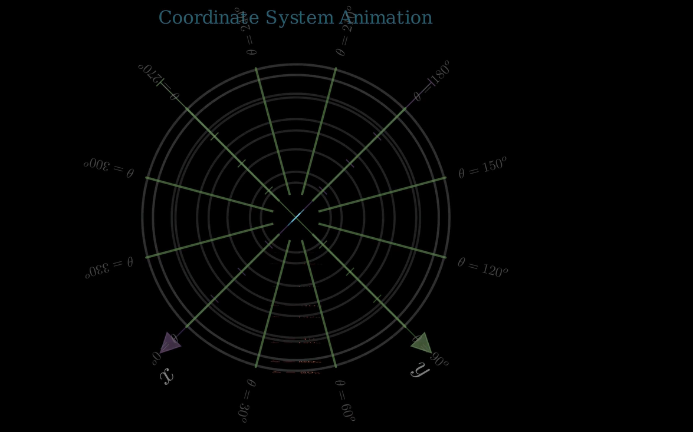

title: “Creating a 3D Coordinate System Animation with Manim” format: revealjs Editor: Visuals
Introduction
A 3D coordinate system defines points in space using three axes (x, y, z), enabling precise spatial representation.
It is fundamental in physics, engineering, computer graphics, and robotics for modeling real-world objects and motions.
By providing a structured framework for measuring distances, angles, and positions, it enhances accuracy in simulations, 3D design, navigation, and data visualization, making complex spatial problems tractable and solutions reproducible across scientific and industrial applications.
1. Setting Up the Scene (Code)
class axesIn3D(ThreeDScene):
def construct(self):
radius = 4 * 7/10 # Base radius for circles/arcs1. Setting Up the Scene
- Inherits from
ThreeDScenefor 3D animations in Manim. - Defines a base
radiusused for all circular elements (latitude/longitude). - Sets up the foundation for a 3D coordinate system animation.
2. Creating the Title
title = Text("Coordinate System Animation", font_size=24, color=BLUE)
title.to_edge(UP*0.4)
self.add_fixed_in_frame_mobjects(title)2. Creating the Title
- Creates a title text object at the top of the scene.
add_fixed_in_frame_mobjectskeeps the title static even when the camera moves.- Visually anchors the animation with a descriptive heading.
3. Building the 3D Axes
axes = ThreeDAxes(
x_range=[-5, 5, 1],
y_range=[-5, 5, 1],
z_range=[-5, 5, 1],
x_length=7,
y_length=7,
z_length=7,
axis_config={"color": WHITE},
x_axis_config={"color": PURPLE_E},
y_axis_config={"color": GREEN_E},
z_axis_config={"color": BLUE},
)
lbls = axes.get_axis_labels()3. Building the 3D Axes
- Creates x, y, z axes with different colors for clarity.
- Each axis ranges from -5 to 5 and is 7 units long in the scene.
get_axis_labels()automatically adds x, y, z labels to the axes.
4. Initial Camera Setup
self.play(Create(axes), Create(lbls), run_time=3)
self.move_camera(phi=45 * DEGREES, theta=45 * DEGREES, run_time=4)4. Initial Camera Setup
- Animates the creation of axes and their labels.
- Sets the camera at a 45° vertical angle (phi) and 45° horizontal angle (theta).
- Smooth camera movement introduces the 3D coordinate system.
5. Creating Phi Circles (Latitude)
for phi in range(15, 180, 15):
circle = Circle(radius=radius * np.sin(phi * DEGREES), color=DARK_GREEN)
circle.shift(radius * np.cos(phi * DEGREES) * OUT)
label = MathTex(r"\varphi={:.0f}^o".format(phi), color=RED_B)
label.rotate(90 * DEGREES, axis=RIGHT)
label.shift([0, -radius*np.sin(phi*DEGREES),
0.2 + radius*np.cos(phi*DEGREES)])
label.rotate(135 * DEGREES, axis=OUT, about_point=ORIGIN)5. Creating Phi Circles (Latitude)
- Draws circles parallel to the xy-plane, representing latitude lines.
- Each circle’s radius varies with
sin(φ)to create a spherical appearance. - Each circle is labeled with its φ (phi) value and label is rotated to face the camera.
6. Creating Theta Arcs (Longitude)
for theta in range(0, 360, 30):
arc = Arc(
radius=radius,
start_angle=10 * DEGREES,
angle=160 * DEGREES,
color=GREEN
)
arc.rotate(90 * DEGREES, axis=RIGHT)
arc.rotate(theta * DEGREES, axis=OUT)
label = MathTex(r"\theta={:.0f}^o".format(theta), color=GREY)
label.shift((1.1*radius - label.get_left()[0]) * RIGHT)
label.rotate(theta * DEGREES, axis=OUT)6. Creating Theta Arcs (Longitude)
- Draws longitude arcs from “north” to “south” pole.
- Each arc is rotated by θ degrees around the z-axis to represent longitude.
- Labels are placed at the equator and rotated to match their respective arcs.
7. Camera Movement Sequence
self.move_camera(phi=45 * DEGREES, theta=45 * DEGREES) # Initial position
self.move_camera(phi=45, theta=405, run_time=6) # Full theta rotation
self.move_camera(phi=0, theta=405, run_time=3) # Top-down view
self.move_camera(phi=0, theta=765, run_time=6) # Two full rotations
self.move_camera(phi=180, theta=405, run_time=6) # Bottom-up view
self.move_camera(phi=180, theta=765, run_time=6) # Two rotations from bottom7. Camera Movement Sequence
- Animates the camera to show the coordinate system from different angles.
phi=0provides a top-down view;phi=180provides a bottom-up view.- Rotating
thetaspins the view around the z-axis, offering a complete view of the 3D space.


theta8. Cleanup and Fade Out
self.move_camera(phi=0, theta=45, run_time=6) # Return to initial view
self.play(*[FadeOut(mob) for mob in self.mobjects], run_time=5)8. Cleanup and Fade Out
- Returns the camera to the starting position.
- Fades out all objects in the scene simultaneously using a list comprehension.
- Provides a smooth and professional exit to the animation.

Key Techniques Demonstrated
- 3D Coordinate System: Creating and labeling 3D axes.
- Spherical Coordinates: Using φ (phi) and θ (theta) to position elements.
- Camera Control: Dynamic camera movements to showcase 3D space.
- Object Rotation: Properly orienting labels in 3D space.
- Gradual Build-up: Animating elements sequentially for clarity.
Summary
- The code produces an engaging, educational visualization of a 3D coordinate system using Manim.
- Demonstrates both technical and graphical aspects: axes, spherical coordinates, camera control, and text orientation.
- Useful for teaching, presentations, and understanding both spatial geometry and Manim’s 3D animation capabilities.